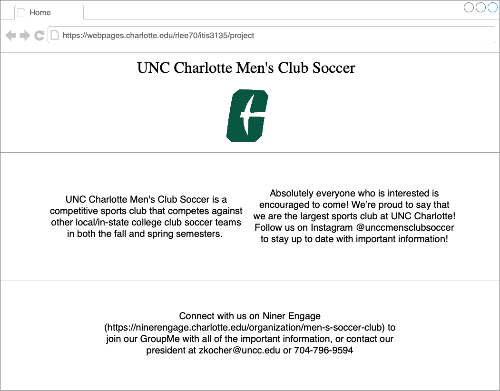

My website will serve as the all-in-one page for anyone intersted in the UNCC Men's Club Soccer team. The
intended users of this site are any students interested in the club team, as well as other schools, or
parents of students. The content in this website will include but not be limited to: a home page, the team
merchandise store, a section detailiing the current officers and their bios, a link to our Niner Engage page
for event information, our team roster, and our game schedule.
My client is the UNCC Men's Club Soccer Team. The team is associated with UNC Charlotte. The club
president's email is zkocher@uncc.edu and his phone number is 704-796-9594.
My Default Page Wireframe

My Site Map Template

Home - This page will be the default page loaded when first visiting the client website, and include basic
information regarding the club and how it operates. The audience of this website would be students who
might be interesting in joining, parents of students, other schools, and members of the club that might
need assistance navigating club procedures. The user will not be required to enter data on this page
This page will contain buttons on the navbar which will navigate to subpages.
Join Us - This page will be dedicated to providing further information about practice times, game
procedures, how squads are picked, and dues for joining the club. It will also include a link to
the Niner Engage page so that anyone who wants to join can be accepted and fill out their DSE's.
The audience of this page would be students interested in joining the club. The user won't be
required to enter any data, since they'll need to go to the Niner Engage website to be
formally accepted. The page will contain links and pictures.
About Us - This page will be used to provide further background information about the club
as well as the club officers and how to contact them. It will include information about
practice and more basic tidbits of information, like where they play on game day and the location
of NRFC, the practice fields just outside of campus. The audience of this page would be
any who are looking for more general information about the club, like students and
their parents. The user won't be required to enter data, because this page will only
be used to present information. There will be links to club officer emails.
Roster - This page will be used to show how many members of the club are currently
enrolled, and include a comprehensive list of every current member of the club,
with emphasis on the officers, as well as pictures of the team. The audience of this
page would likely be students or any club members who might need to find someone's contact
information. The user won't be required to enter data. There won't be many actions on this page.
Schedule - This page will be used to show the club's event calendar for the Spring and Fall
semesters, according to what has been planned now (sometimes it takes time to organize
games when they take place far in the future.) The content of it will be our schedule.
The audience of this page would be students or parents interested in attending games, as
well as other schools who need to know our availability before determining a date for games.
The user won't be required to enter data, and there will be links to Niner Engage events
for club members to RSVP to.